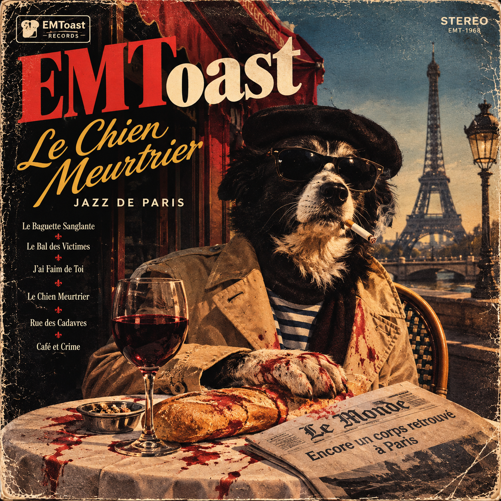
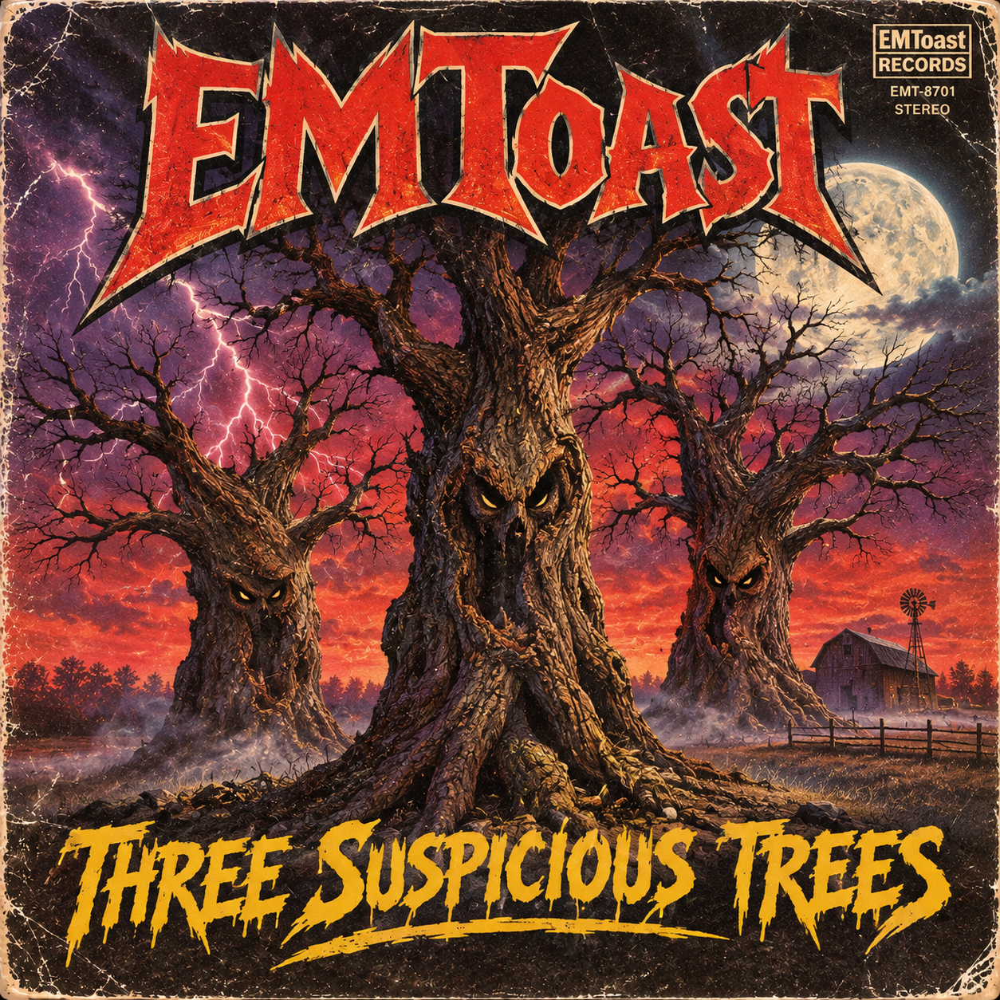

Portrait of My Dog as a French Serial Killer: The Album


Reprint!? Now websites are doing reprints? And making record album covers of articles from 13 years ago? AI really is killing the internet. In 13 more years the AI really will make an album out of this while it does my job.
https://emtoa.st/portrait-of-my-dog-as-a-french-serial-killer/
My dog posed for a sketch. I placed him on interview. He is a French serial killer. French is the language of tongue curling.
He said, “Everybody makes a big deal about killing hookers like it’s such an accomplishment. Where’s the challenge in that? How about a serial killer who kills bosses. I mean that would be impressive. Tell me about a guy who has been at the same job for 17 years and killed every boss he ever had. Now you’ve got my interest.
Back in France killing people is easy. It’s the same as with cats. You don’t really think about it, you just do the killing. I’m working my way through the crowd. That’s how you do it. Slow and steady.
Did you hear about the puppy serial killer? A little dachshund and he’s been through 65 foster families in less than a year. I don’t know how he’s getting away with it, but that little guy impresses me.”
I think my dog is a liar, otherwise I’m not sure how I’ve survived this long.
Related posts

EMToast Three Suspicious Trees: The Album
You may have heard the story of 3 suspicious trees that were under investigation up in Hunterton County back in…
Baptism Reversal Cures Cannibalism & Serial Killers
James Vanderbiek claims he has discovered the reset button for the human soul, and it’s not what you think. Most…

EMToast: Future Trash Album
We got the whole 2009 crew together for this electroclash compilation.

EMToast: The Album Featuring Ass Dragging Werewolf
The perfect embodiment of EMToast 2009 as a record album. Featuring classics like Ass Dragging Werewolf, Tunguska Creature, Horrorscopes and…